2017 was a good year for the gaming industry and we hoped that you had a good year as well,
but now we have to look what comes this year for us as a company and as passionate gamers.
What games are in the must buy category this year so far announced? Don't worry we got you covered.
Also we wish you a a fulfilling new year.
Days Gone (PS4)
God of War 4 (PS4)
Ni no Kuni II (PS4, PC)
Mnster Hunter: World (PS4, XB1)
Game of the Year 2017
Kukic Tatjana
The year 2017 comes to an end and before we close this year with fireworks we present you a special.
These are undoubtedly the best games of the year 2017, rated by critics and by ourselves as well. The winner
for the Game of the Year awards 2017 is unsurprisingly The Legend of Zelda: Breath of the Wild by Nintendo.
However the other nominees for the Game of the Year Awards 2017 are:
Super Mario Odyssey (Nintendo)
Persona 5 (PS4)
Horizon Zero Dawn (PS4)
Nier: Automata (PS4,XB1,PC)
Playerunknown's Battlegrounds (PC, XB1)
VR 2017
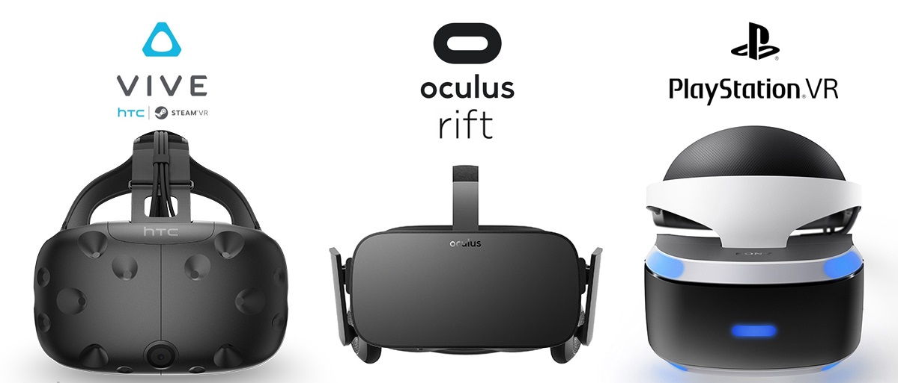
Kukic Tatjana
When the Oculus Rift, HTC Vive, and PlayStation VR released in 2016, they were derided as being too expensive.
All three VR headsets have received significant price drops in 2017, however, making them much more accessible.
VR may still be far from mainstream, but its market share grew steadily in 2017. They are now an affordable
christmas gift for passionate gamers. For most people still not a reason to buy just yet, ut maybe they can
get to a wider audience in 2018?
Gigantic Studio MOTIGA closes
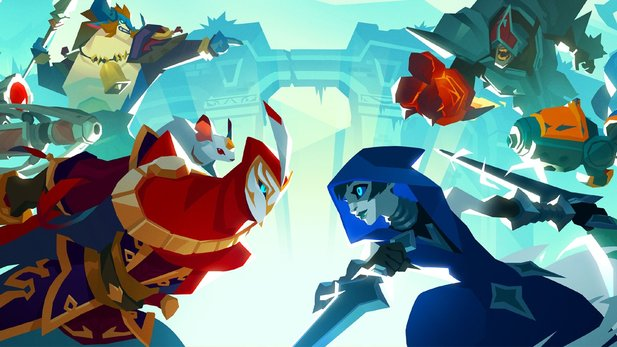
Kukic Tatjana
As the site Destructoid reports, several employees of Motiga have confirmed that the studio will close soon.
About 50 employees have to look for a new job afterwards. In the past there were regular layoffs, which was
due to the problematic development of the MOBA shooter Gigantic. Originally the game was to be released by
Microsoft, but the company ran out of money in 2016. It was only after the acquisition of Perfect World Entertainment
that Gigantic finally hit the market in July this year. Sadly for everyone participating and players even
Perfect World Entertainment dropped them. The interest of Perfect World Entertainment was to be profitable and
Gigantic simply could not generate enough revenue. This moment is incredibly heart-breaking considering the years
this team has struggled to even get this game out for players to enjoy even though most of them didn't even got paid.
And not even after 6 months since its launch all developers and employees are now unemployed. This is truly a sad day
for all Gigantic fans.
China wins both 1vs1 and Team All Star Tournament
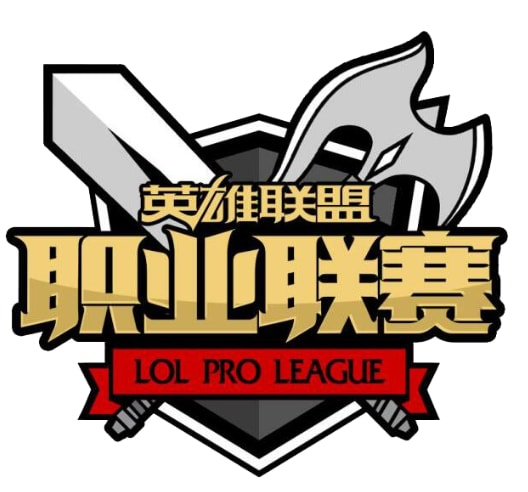
written by Nguyen Hai Tuan Son
This event marks the end of the year for competitive E-Sports in League of Legends. A spectacular tournament with
all kinds of surprises and upsets all across the tournament. But more surprisingly in both 1vs1 and
All Star Team Tournament China dominantly. The chinese squad are showing what they can really do, as a team and
in individual games. As they were saying sorry to their fans for their poor performance at the
Worlds Championship Tournament in their home country. Their strong performance at the end of the year shows
what they maybe can achieve in the coming year.
Get ready for the 2017 All-Star Event
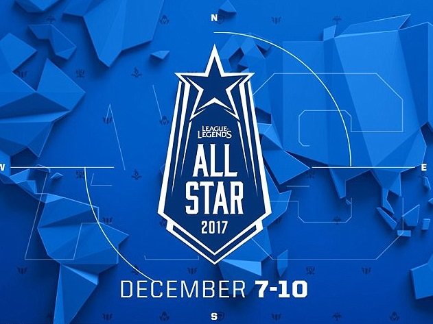
written by Nguyen Hai Tuan Son
All-Star 2017 is coming up quick and we’ve got all the info you’ll need to get ready for the battle
of the Dream Teams coming your way on December 7-10. Fans have chosen the players who they want to compete
and represent their region. There are two components to All-Star 2017: the Main Event Tournament and the 1v1 Tournament.
For the Main Event, teams will be split into two groups and compete in a single Best of 1 (Bo1) round robin.
From there the top two teams from each group will move on to the Best of 3 (Bo3) Semifinals for their shot
at the Best of 5 (Bo5) Finals. The 1v1 Tournament will feature 16 players as chosen by their coaches.
These players will go heads up in a single elimination bracket. The Round of 16 and Quarterfinals will
follow a Best of 1 format, while the Semifinals and Finals will move to Best of 3s. This will be legendary, don't
forget to tune in on LoL Esports Youtube or Twitch Channel on Thursday the 7th December.
Shitstorm against EA
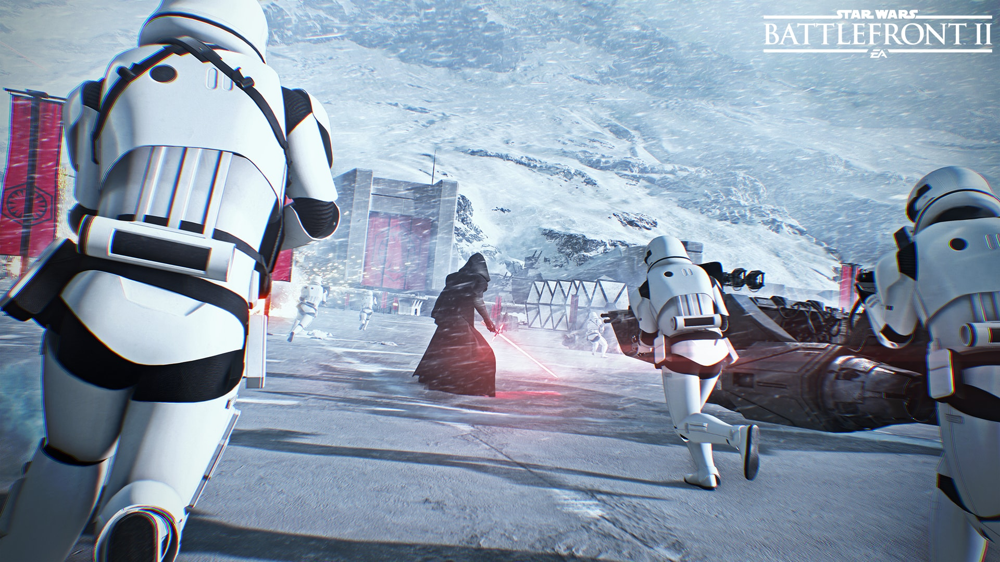
Kukic Tatjana
With the newest game developed and published by Electronic Arts: Star Wars Battlefront II, EA thought they
had the Fans of the IP on their side. But they got surprised by the reactions by gamers which are banding
together TO NOT BUY the game, which led to low sales and stock market slump even though they had a huge investment,
marketing campaign. The reason was clearly the microtransactions which basically
means that if you buy the game for whooping 60-70€ depending in which country you live or currency you use, you
have to buy in-game items to even compete with other players. This led to huge damage to the image of the company
which already wasn't the best already. This with the server problems on launch day, led to this situation right now
with the players and fans against them.
The best Mobile Games of 2017 Part 2
written by Mai Truc Linh
Samorost 3
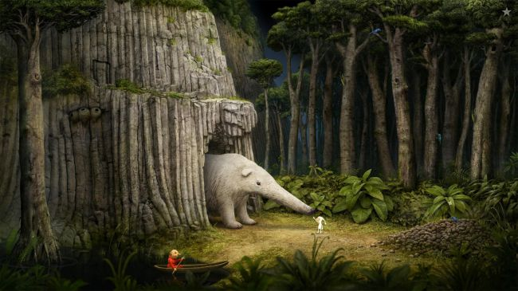
Samorost 3 is a love letter to classic point-and-click adventure games. You explore your surroundings,
unearth objects, and then figure out where best to use them. Straightforward stuff, then
(at least in theory – many puzzles are decidedly cryptic), but what sets Samorost 3 apart is that it’s
unrelentingly gorgeous, and full of heart.
Platform: Android, IOS
Developer: Amanita Design
Google Play Store: 4,99€
Apple iTunes: 5,49€
The Escapists
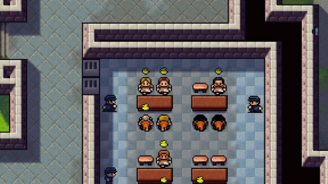
In The Escapists, you find yourself in jail with lots of dinky pixelated inmates. The aim, as the title suggests,
is to get out of there – but how? The game’s not telling. Beyond a very brief tutorial, The Escapists is very much
a sandbox, dumping you in its universe and having you explore. You go about your day as an inmate, using opportune
moments to venture into places you shouldn’t, and fashion the tools you need to escape.
Platform: Android, IOS
Developer: Team 17 Digital Limited
Google Play Store: 3,99€
Apple iTunes: 4,99€
The best Mobile Games of 2017 Part 1
written by Mai Truc Linh
It's been ten years since Android was first announced and in that time we've seen hundreds of thousands of
games hit the Google Play Store, but obviously not all of them are high quality, and with so many available
it can be tricky to make sure you're putting your cash in the right place.
We thoroughly recommend playing through a few regularly to find the games that work the best for you.
Monument Valley
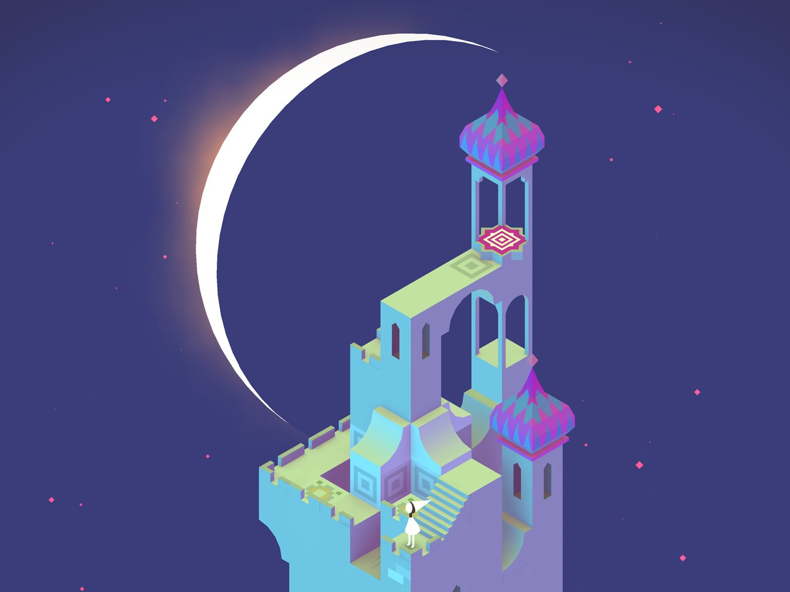
In Monument Valley you will manipulate impossible architecture and guide asilent princess through a stunningly beautiful world.
Monument Valley is a surreal exploration through fantastical architecture and impossible geometry. Guide
the silent princess Ida through mysterious monuments, uncovering hidden paths, unfolding optical
illusions and outsmarting the enigmatic Crow People.Ida's Dream now available.
Forgotten Shores: Eight new chapters of adventure and illusion available now as a separate purchase.
Platform: Android, IOS
Developer: USTWO
Google Play Store: 2,99€
Apple iTunes: 4,49€
Monument Valley 2
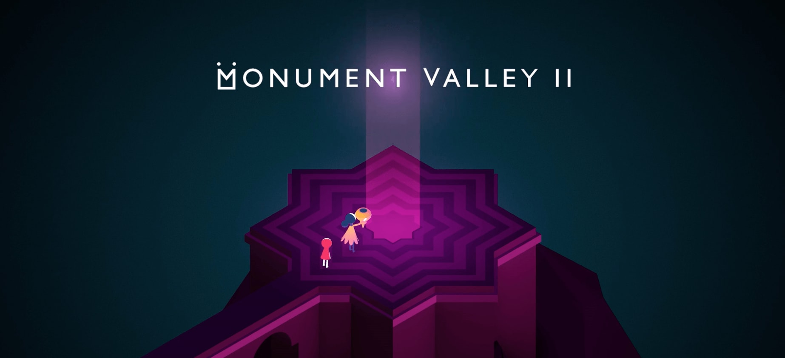
Guide a mother and her child as they embark on a journey through magical architecture,
discovering illusionary pathways and delightful puzzles as you learn the secrets of the Sacred Geometry.
Sequel to the award-winning Monument Valley, Monument Valley 2 presents a brand new adventure set in a
beautiful and impossible world. Help Ro as she teaches her child about the mysteries of the Valley,
exploring stunning environments and manipulating architecture to guide them on their way.
Platform: Android, IOS
Developer: USTWO
Google Play Store: 4,49€
Apple iTunes: 5,49€
Assassin's Creed Origins Review
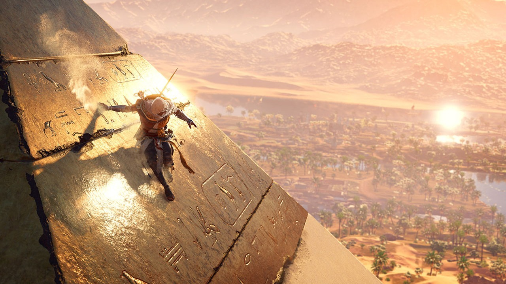
written by Mai Truc Linh
When you need to see the bigger picture, sometimes it's best to return to your roots. Assassin's Creed Origins
takes this thinking to heart and steps into the seamless and dynamic open world of ancient Egypt. Although
this move shows glimmers of a brighter future for the series, it also becomes clear that its core gameplay and
presentation have some difficulties keeping up with the newfound pace and scale.Blurring the lines between prequel
and sequel, Assassin's Creed Origins takes us back to the beginning of the Assassin Brotherhood, while also
laying the groundwork for a new present-day storyline. Set during the time of the Ptolemaic Kingdom in Egypt,
you take on the role of Bayek, a Medjay ranger who embarks on a quest for revenge against a mysterious order
that pre-dates the Templars. Crossing paths with historical figures such as Cleopatra and Julius Caesar,
Bayek travels through the dense and varied lands of Northern Africa. He'll sneak, loot, and stab key figures in the social
and political worlds of Egypt, leading to several unforeseen consequences for the future of the Kingdom, right up to present day events.
6.000 Games released on Steam just this year
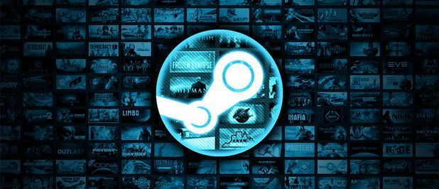
written by Mai Truc Linh
Over 6,000 games have been released on Steam so far in 2017. We still have a month and a half left in 2017,
but that number is already huge. This number comes from industry analyst Daniel Ahmad from Niko Partners.
As Ahmad stated, this 6,000 count is nearly equal to the total number of games released on Steam from 2005 to 2015.
In 2016, the number sat around 4,200 games released (via GI.biz). Check out the huge climb in releases on Steam that Ahmad compiled:
Steam Direct, the replacement for the indie program Steam Greenlight implemented this year, likely had a big
influence on this number. Since its launch, more than 1,000 games have been released (via Kotaku).
Steam gets a small cut of every game sold, as well as a $100 fee for every Steam Direct application filed,
so this 6,000 number can only mean good things for the distributor.
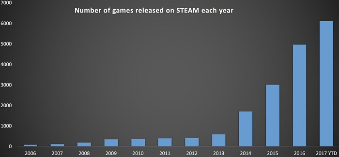
Blizzcon 2017: Overwatch, World of Warcraft, Hearthstone and more!
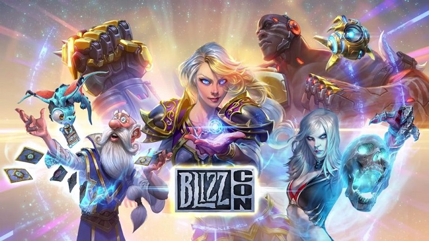
written by Mai Truc Linh
Blizzard Entertainment comes together with fans, developers and more every year to celebrate its huge catalogue
of iconic titles and all things Blizzard. This year is no different, with Blizzcon 2017 taking place in Anaheim, California this weekend!
Game Horizon has compiled all the latest announcements, news, events and more. It’s been an absolute blast,
so we’ve put together all the details you need below. Blizzcon Latest News and Announcements
Starcraft 2 is becoming a free-to-play title on November 14th alongside a new co-op commander and missions for the RTS.
Kobolds and Catacombs has been announced as the next Hearthstone expansion, revealed with a ludicrously catchy new trailer.
Dungeon Run is an all-new single-player experience coming to Hearthstone that will see you leveling up unique cards and
characters. It’s essentially a ‘Hearthstone Rogue-Like’ Blizzard World is a new map coming to Overwatch.
It’s a theme park based on the studio’s legendary titles. It looks incredibly cool! The hybrid map will be going live early next year.
Moira is the next hero coming to Overwatch. She’s a support character capable of both massive healing and damage.
League of Legends Worlds Championship 2017 - Final
written by Nguyen Hai Tuan Son
First the gods bled, and then they fell.
SK telecom T1’s quest for a three-peat championship was ended by Samsung Galaxy in a thrilling 3-0 match.
This marks the end to the heartbreak they suffered almost exactly a year ago when they fell short against
SKT in Los Angeles. Nevertheless Team Samsung Galaxy is clearly the best team in competitive League of Legends
right now. They played a nearly perfect tournament sweeping the best teams away. It seems like a new era is coming.
Paris Games Week 2017 - Showcase Highlights
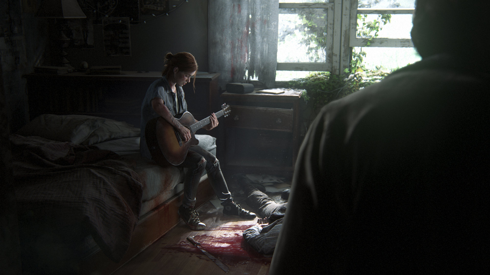
written by Kukic Tatjana
Here are our top 5 announcements from the Paris Games Week 2017.
The Last of Us Part II
God of War 4
Detroit: Become Human
Shadow of the Colossus
Concrete Genie
For more information about all Games announced please visit:
One of Europe's biggest Games Expo is back again this year with huge announcements. From 01.11.17 to 05.11.17
the best game developers and publishers will introduce their new games and future plans to the public.
We are incredibly excited for Sony's press conference, they already announced that 7 new games that will be
presented at this year's PGW. Fortunately, you don't have to actually be in Paris to watch the announcements
as they happen. As always PGW is broadcasting live on Twitch, Youtube and other streaming services. But do not
worry, we from Game's Horizon got you covered with the latest announcements! Stay tuned for some gigantic game news.
China's dreams of Finals crushed
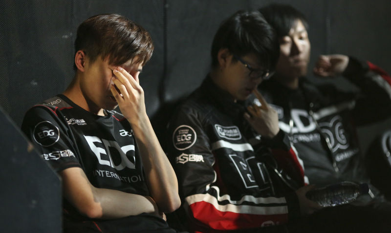
written by Nguyen Hai Tuan Son
Once again China's best teams could not hold against the Juggernaut's from Korea. It seems that even the home advantage
couldn't give the chinese teams that what they hoped for, to reach Finals and eventually win Worlds for the first time.
The first big disappointment for China was that Team EDG couldn't make it out of Group Stages.On Saturday China's
number 1 seed lost against the worlds undisputed best Team SKT T1. Even if this was a close game with 2-3 match loss,
it still was a huge disappointment for chinese fans who filled the stadium to the last seat. Today on a Sunday evening
the last remaining chinese Team WE lost 1-3 against another korean Team Samsung Galaxy. Even the roar of the chinese fans
in the stadium couldn't give Team WE the mentality boost to win against Samsung Galaxy and the stadium remained
silent as the korean team won the last game and took a bow before the massive crowd. In the end the Worlds 2017
League of Legends Finals will be another all korean finals with a rematch from last year between SK Telecom T1
and Samsung Galaxy. The finals will be held on Saturday the 4th of November 2017 the in the Bird's Nest Stadium in Beijing, China.
This will be the biggest stadium an E-sports tournament has ever played in.
Super Mario Odyssey releases worldwide
written by Mai Truc Linh
Nintendo's most iconic character comes to the Switch in one of his best adventures ever. The long awaited game
finally comes to the switch for everybody to enjoy. After several hours with the game we from Game's Horizon
can say that this game is a masterpiece and probably will win Game of the Year Award. The whole game is basically
like a massive playground. Mario isn't only a plumber in this game, he is a doctor. He’s the lead in a mariachi band.
He’s a building inspector. He’s eager to fill whatever role the occasion calls for. Super Mario Odyssey
expands on Mario’s chameleon-esque nature by giving him a new, all-encompassing ability: the power to take
over and control other characters and enemies by tossing his hat upon their noggin. Also the feeling of traveling
through lively worlds will give players a desire to travel the world, since it is massive, fun and colourful.
Nintendo always manageds to show that Video Games are truly an art by itself, especially this game.
If you don't already have a Switch then this game is a reason to own one yourself.